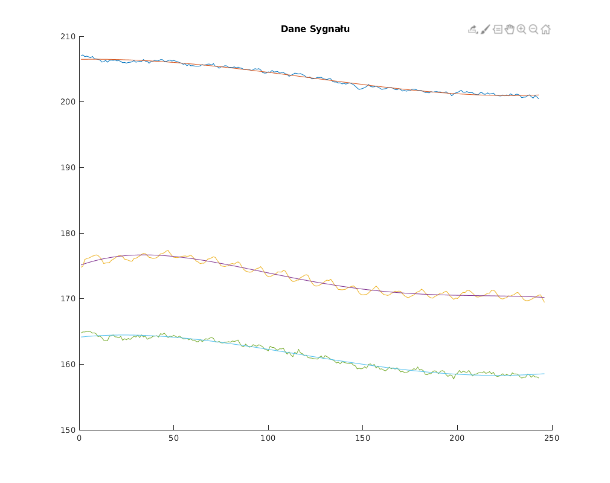
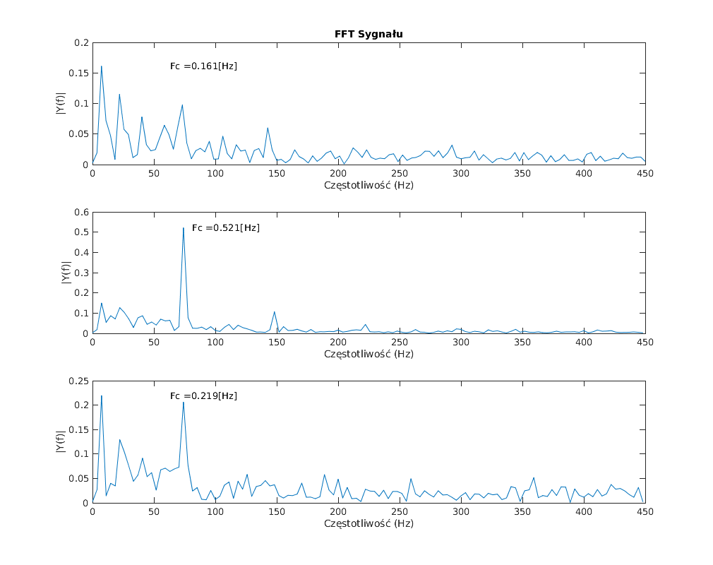

figure('Renderer', 'painters', 'Position', [10 10 1000 800])
hold on
title('Dane Sygnału')
plot(daneP.R(12:254))
xR = [1:length(daneP.R(12:254))];
yR = daneP.R(12:254)';
p1 = 7.2602e-10;
p2 = 6.9551e-07;
p3 = -0.00032453;
p4 = 0.0050677;
p5 = 206.47;
pR = [p1 p2 p3 p4 p5];
plot(polyval(pR,xR))
plot(daneP.G(10:255))
xG = [1:length(daneP.G(10:255))];
yG = daneP.G(10:255)';
p1 = -1.647e-08;
p2 = 1.0218e-05;
p3 = -0.0020282;
p4 = 0.10609;
p5 = 175.03;
pG = [p1 p2 p3 p4 p5];
plot(polyval(pG,xG))
plot(daneP.B(12:254))
xB = [1:length(daneP.B(12:254))];
yB = daneP.B(12:254)';
p1 = -1.6042e-09;
p2 = 2.3764e-06;
p3 = -0.00069774;
p4 = 0.029086;
p5 = 164.13;
pB = [p1 p2 p3 p4 p5];
plot(polyval(pB,xG))
czest = 60*15;
figure('Renderer', 'painters', 'Position', [10 10 1000 800])
hold on
subplot(3,1,1)
Y = fft(yR - polyval(pR,xR));
P2 = abs(Y/length(daneP.G(10:255)));
P1 = P2(1:floor(length(daneP.G(10:255))/2+1));
P1(2:end-1) = 2*P1(2:end-1);
f = czest*(0:(length(daneP.G(10:255))/2))/length(daneP.G(10:255));
plot(f,P1)
title('FFT Sygnału')
xlabel('Częstotliwość (Hz)')
ylabel('|Y(f)|')
[maxY, maxX] = max(P1);
text(maxX + 60, maxY, strcat('Fc = ',sprintf('%0.3f',maxY), '[Hz]'))
subplot(3,1,2)
Y = fft(yG - polyval(pG,xG));
P2 = abs(Y/length(daneP.R(12:254)));
P1 = P2(1:floor(length(daneP.R(12:254))/2+1));
P1(2:end-1) = 2*P1(2:end-1);
f = czest*(0:(length(daneP.R(12:254))/2))/length(daneP.R(12:254));
plot(f,P1)
xlabel('Częstotliwość (Hz)')
ylabel('|Y(f)|')
[maxY, maxX] = max(P1);
text(maxX + 60, maxY, strcat('Fc = ',sprintf('%0.3f',maxY), '[Hz]'))
subplot(3,1,3)
Y = fft(yB - polyval(pB,xB));
P2 = abs(Y/length(daneP.B(12:254)));
P1 = P2(1:floor(length(daneP.B(12:254))/2+1));
P1(2:end-1) = 2*P1(2:end-1);
f = czest*(0:(length(daneP.B(12:254))/2))/length(daneP.B(12:254));
plot(f,P1)
xlabel('Częstotliwość (Hz)')
ylabel('|Y(f)|')
[maxY, maxX] = max(P1);
text(maxX + 60, maxY, strcat('Fc = ',sprintf('%0.3f',maxY), '[Hz]'))
 